안녕 샘아?
내가 너에게 오랜만에 쓰는 편지야. 조금 특별하게 준비해봤어.
너가 좋아했으면 좋겠네.
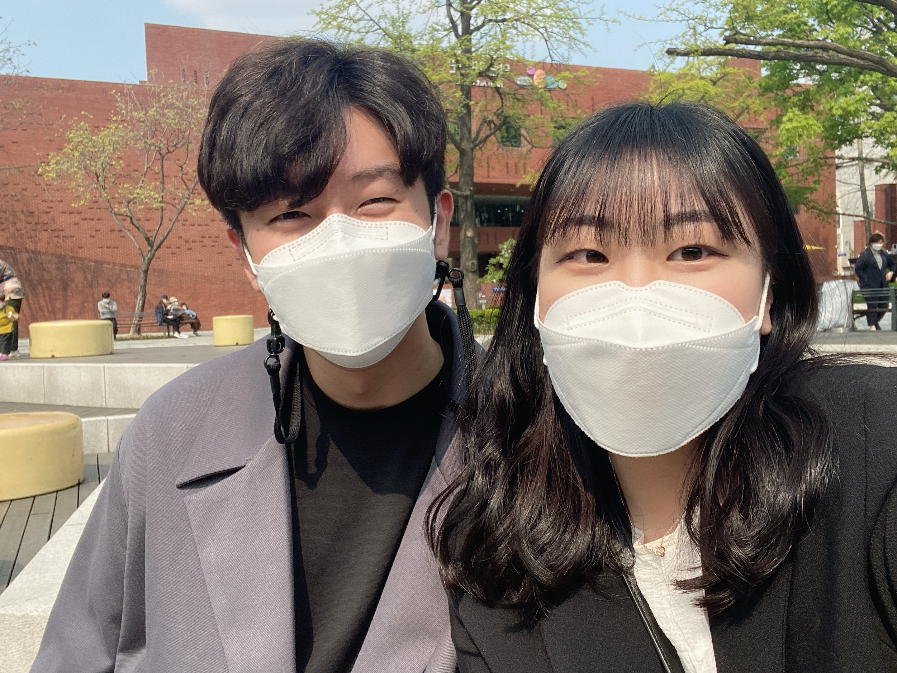
우리가 처음 만나고 갔던 연극 기억나? '옥탑방 고양이'였는데 너무 재밌게 봤던 기억이 있어. 내 인생 처음으로 봤던 연극이 너와 함께라니 난 너무 행복했어.
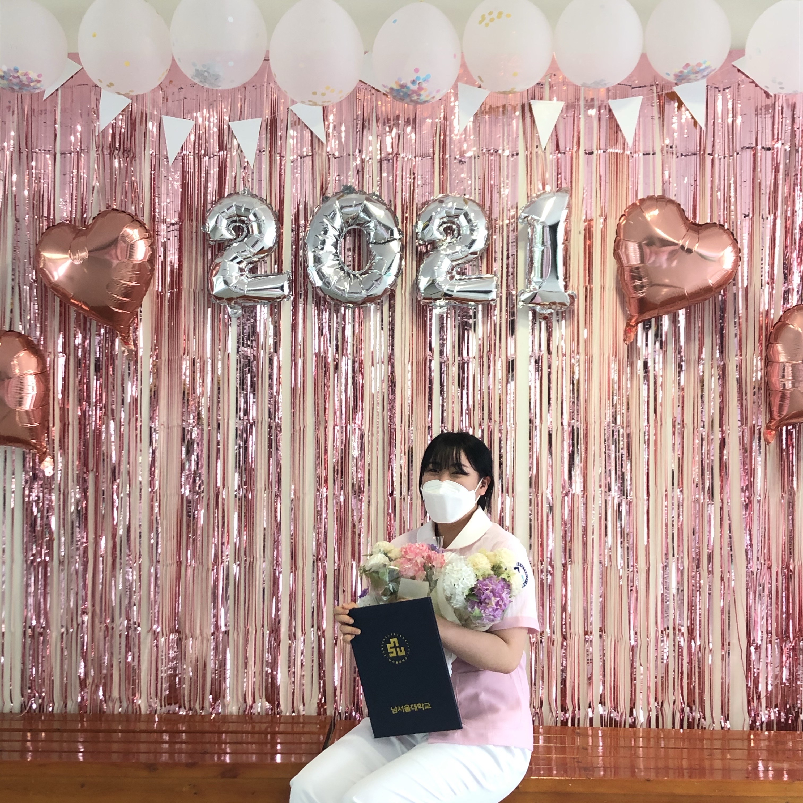
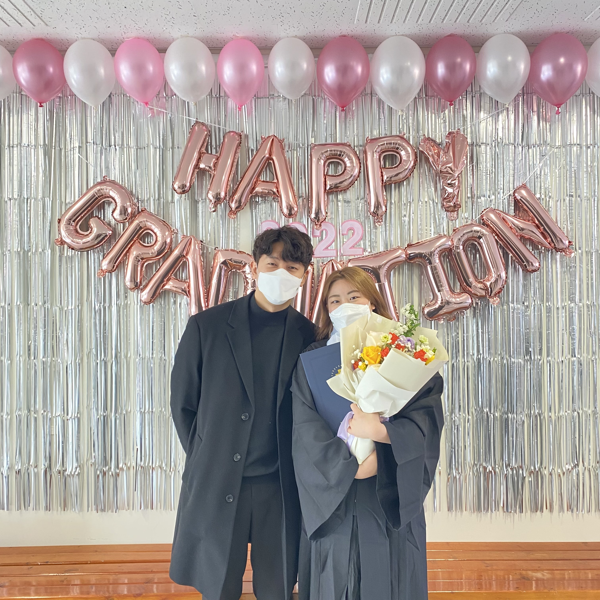
대학생일 때 만났던 우리 샘이가 졸업을 하고 멋있는 간호사가 됐다니!
너의 미래를 축복했던 추억이었어.
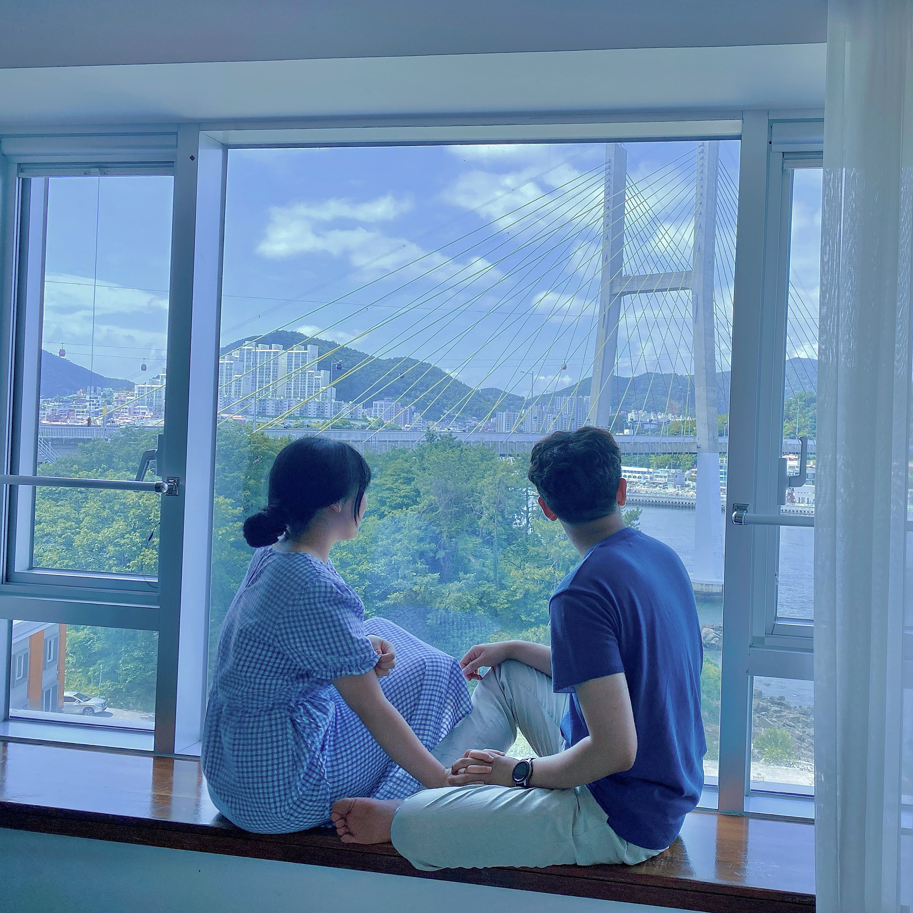
우리가 만나고 처음으로 갔던 여수 여행이야.
너와 함께 간 기념비적인 여행이었고 너무 행복했어.
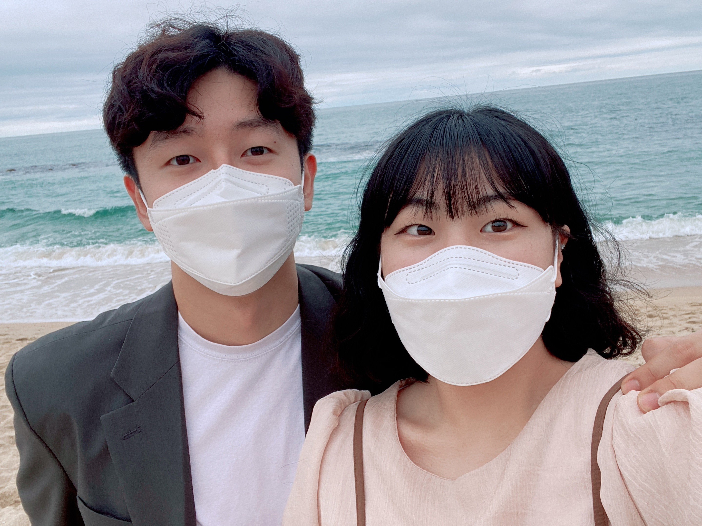
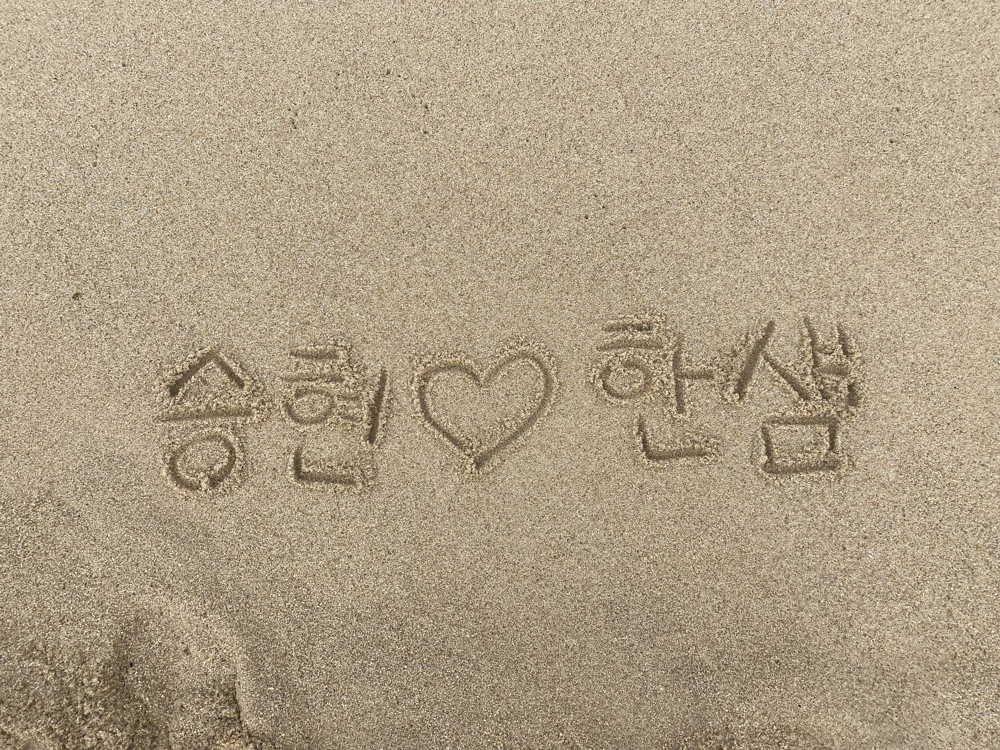
즐거운 강릉 여행!
바닷가 해변에 우리의 이름을 새긴 기억이 새록새록 나네.
내 모습을 너가 찍고 인스타에 올렸었지 ㅎㅎ
당일치기로 갔다 왔지만 힘들지 않았고 너무 행복했어.
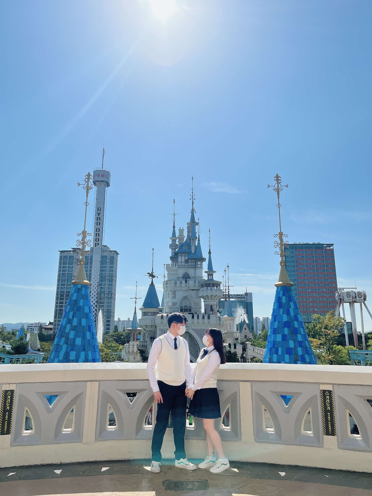
우리가 교복 입고 놀았던 롯데월드 기억나?
너무 낭만적이었고 재밌었던 데이트였었지.
너가 교복을 입은 모습은 정말로 귀여웠었지♥
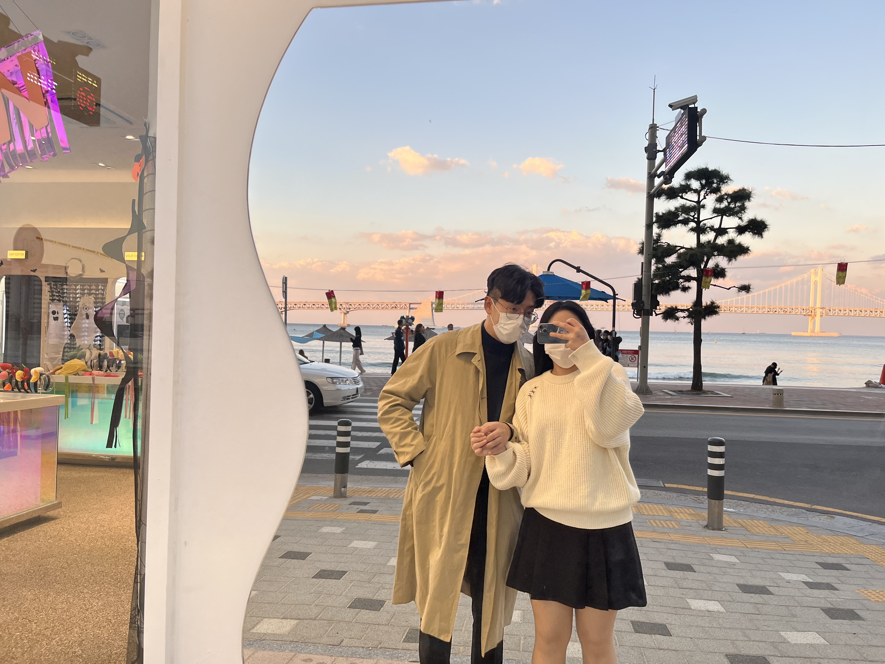
너와 처음 비행기 타고 갔던 부산 여행~!
오션뷰 숙소도 좋았고 재밌었던 기억이었어.
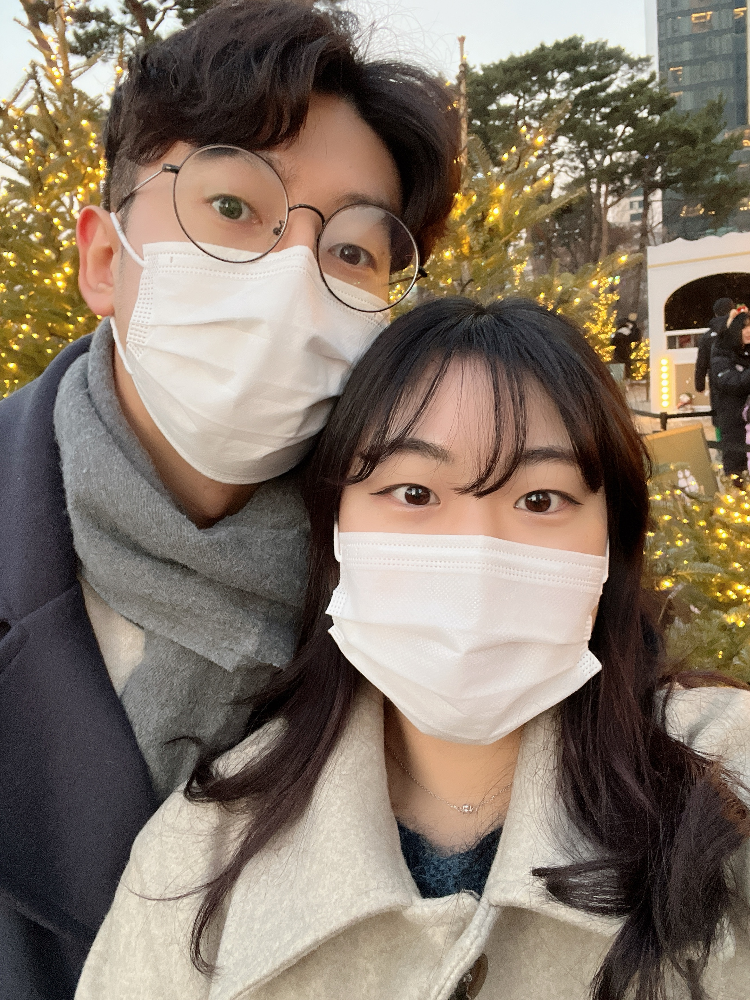
너가 강동경희대병원에서 근무했을 때 잠실에서 크리스마스를 즐겼던 우리의 추억이야.
너와 나와 강동에서 같이 생활했던 건 나에게 행복이자 축복이었어.
난 이 기억을 평생 갖고 살 거야.
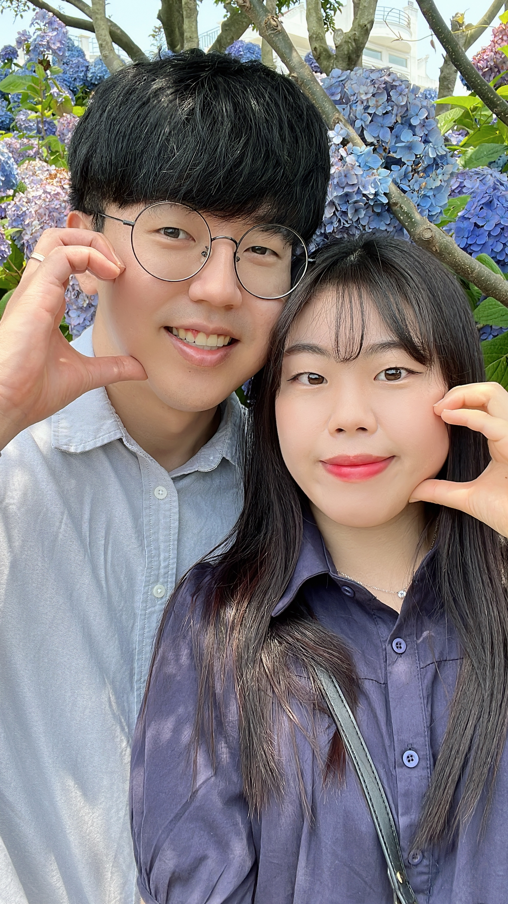
첫 제주도 여행~!
바다도 맑고 새우, 흑돼지도 맛있었고, 특히 수국이 너무 이뻤던 추억이 있어.
해안도로에 너가 운전을 한 기억도 있네 ㅎㅎ 운전 잘하더라!
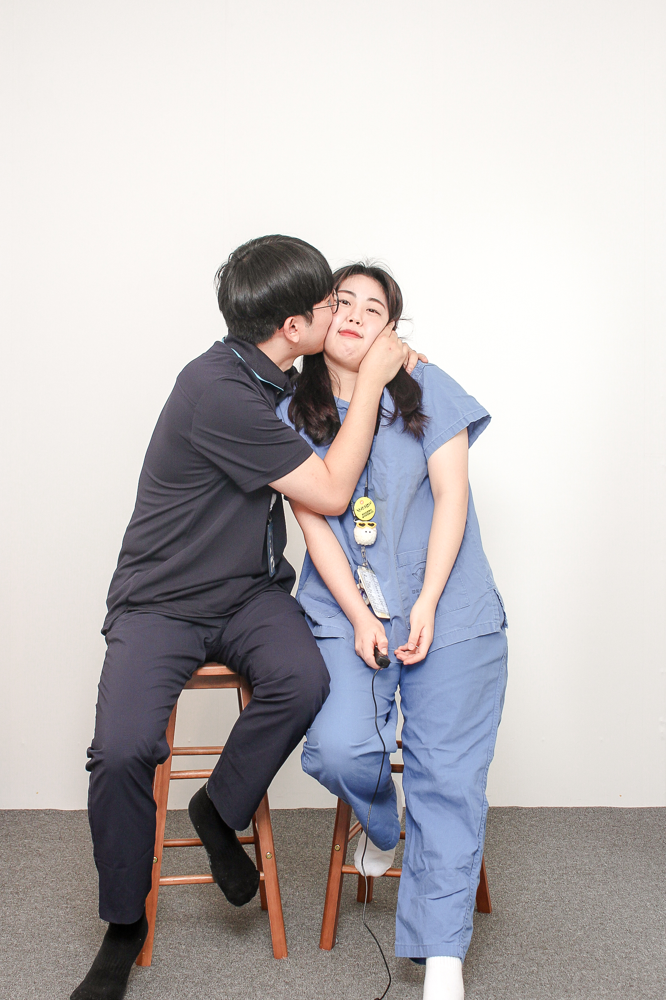
내가 인천공항에 취업하고 같이 찍었던 사진이야.
드디어 내가 돈을 벌어 우리가 풍족한 생활을 할 수 있다는 생각을했던 것 같아.
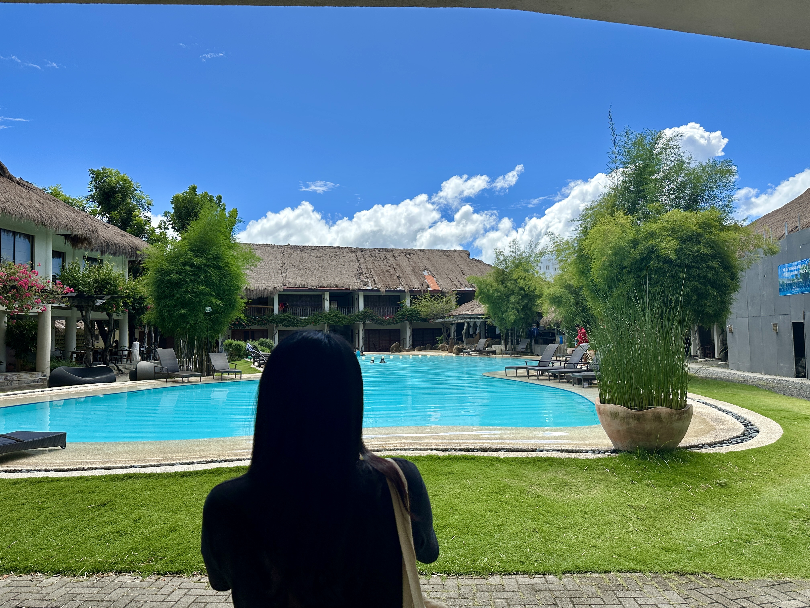
우리가 처음 해외여행을 간 세부여행 사진이야.
정말 기념비적이었지! 너무 재밌었고, 추억도 많이 쌓았고, 마사지도 잔뜩 받았지. 이게 낭만이지!
우리가 처음 만났던 날부터 지금까지 행복했던 기억이 모여 난 너와 평생 함께 하고 싶은 마음만 생겼어.
넌 나에게 소중한 사람이야. 맛있는 걸 먹어도 너랑 같이 먹고 싶고, 좋은 장소로 가도 너와 함께 가고 싶고, 신기한 경험을 해도 너와 함께 하고 싶어.
넌 나를 빛나게 해주는 사람이고 그 보답으로 너를 더욱 빛나게 해주고 싶어. 너와 만나지 못했다면 난 그저 그런 목표가 없는 사람으로 생활했을 거 같아.
너와 같이 평생을 함께 하면서 너를 보며 노력을 하고 앞으로 갈 수 있는 원동력이 되는 내 하나뿐인 사람이야. 그래서 너와 결혼을 결심한 계기가 된 거 같아. 난 너가 없으면 안 되거든.
너에게 프로포즈를 한 건 내 인생 2번째 용기야.
첫 번째 용기는 나와 사귀자고 한 고백(용기를 냈지만 돌려서 말했지...), 두 번째 용기는 뭔가 엉성한 프로포즈야.
엉성하고 장소도 이상한 프로포즈이지만 내 마음은 진심이었어. 이것만은 알아줬으면 해.
하지만 그 후에 우리 서로의 부모님을 만났지만 너는 큰 상처가 남았지. 너무 미안해. 너의 상처가 크다는 것도 충분히 이해하고 있어. 중간에서 내가 아무것도 안 한 나의 잘못이야. 이건 평생 내가 가지고 있을 짐이야. 이 짐을 들고 다니면서 나의 부족한 점을 보완하고 실천할 짐이야.
난 너무 무서웠어. 너가 나와 결혼을 고민하고, 아이를 낳기 싫다는 얘기를 했을 땐 난 너무 충격을 받았어. 이 편지를 쓰면서 눈물이 좀 흐르네.
너에게 과분한 나이지만 나와 결혼해 줬으면 해. 평생 행복하게 같이 살 수 있도록 노력할게. 나는 너를 과거에도 사랑하고 지금도 사랑하고 미래에도 사랑해. 부족한 나를 사랑해 줬으면 나는 너무 행복할 거 같아.
나와 결혼해줄래?
Will you marry me?